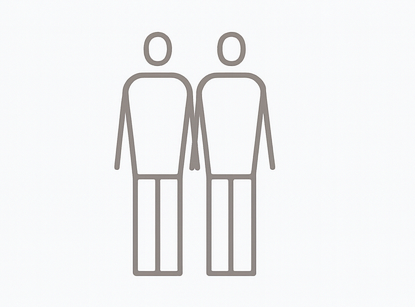
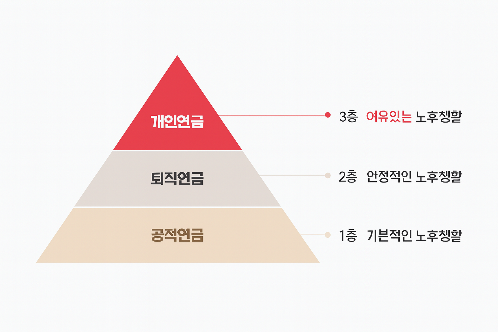

왜 퇴직연금인가?
연금으로 준비하는 노후 · 노후준비의 중요성 · 생애설계 시 고려사항
3층 연금구조를 통한 은퇴설계가 반드시 필요합니다.
공적연금은 가장 기본적인 노후준비의 시작입니다. 그러나 국민연금의 소득대체율 감소, 노인부양비 증가 등으로 국민연금만으로는 안정적인 노후를 보장할 수 없습니다. 퇴직연금과 개인연금을 함께 준비하여 부족한 노후자산을 보완해야 하는 시기입니다.
생산 가능 인구 감소
노인 1인을 부양하는 생산연령인구 기준
6.6명

2010년
2.6명

2030년
1.2명

2060년
출처 : 통계청 장래인구추계(2015~2065), 국가승인통계 제10133호, 2016.12.8 공표
3층 연금구조란?
고령화 사회를 먼저 겪은 국가들은 오랫동안 3층 연금구조를 통해 근로자의 노후를 대비해왔습니다. 3층 연금구조는 국가(공적연금), 기업(퇴직연금), 개인(개인연금) 3단계 보장을 통해 퇴직 이후에도 안정적인 생활을 유지하도록 지원하는 제도입니다.
